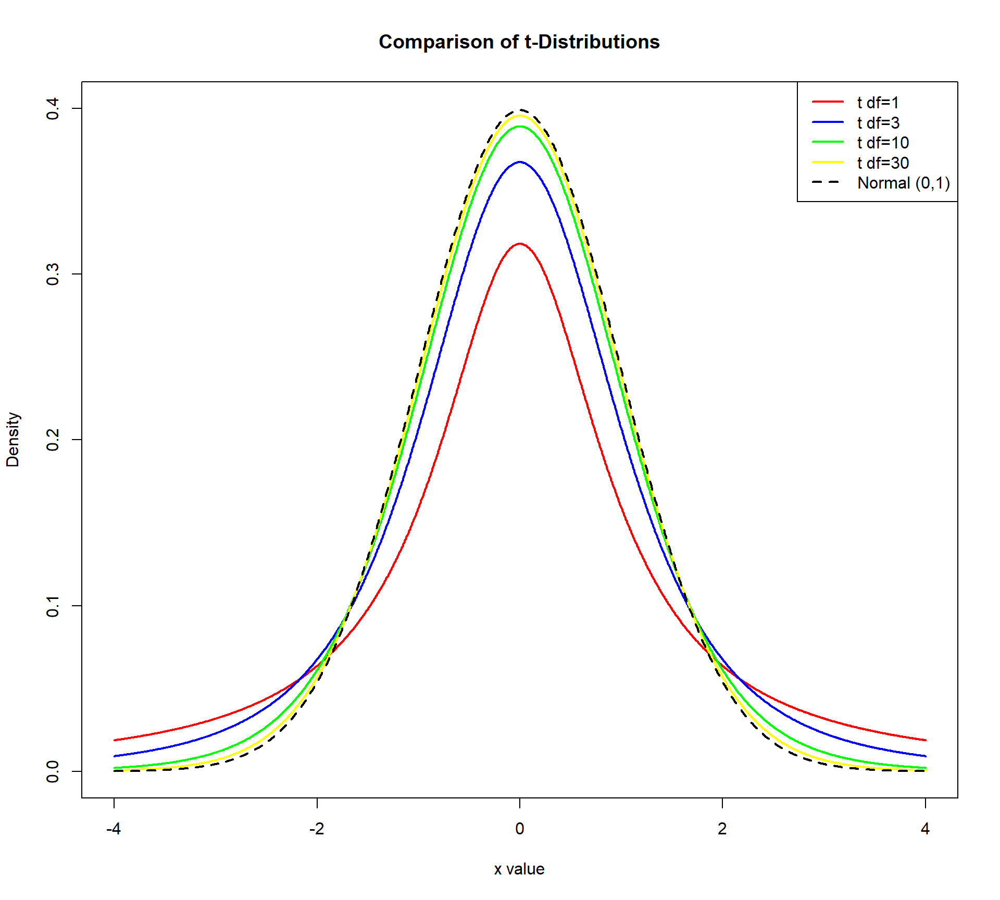

[1] 1.959964Lecture 9: Confidence Intervals
BIOS 600 - Spring 2026
Announcements
Reminder new tutoring office hours Monday (in-person) and Thursday (by zoom) from 3:30-5, in addition to tutoring office hours on Wednesday and Friday
Molly’s office hours on Friday are still from 1-3 PM but have shifted to a new location McGavern Greenberg 3101A!
Announcements
If you have not turned in AE #2 from last week please do so by this Friday at 11:59 pm
HW 4 will be assigned later today and will be due next Thursday February 26 at 11:59pm.
Overview
Confidence intervals: what are they, and how do we interpret them?
qnorm()andpnorm(): useful functions in R and how to use themUsing a t-distribution vs. a z-distribution to create confidence intervals
Readings
P & G: Chapter 9
OpenIntro: No corresponding section.
What is a confidence interval, anyway?
A confidence interval gives a range of values that is intended to cover the parameter of interest to a certain degree of “confidence”
Confidence interval = point estimate \(\pm\) margin of error
How do you interpret a confidence interval?

Researchers conducted a clinical trial of a drug intended for severe asthma patients. Their primary endpoint was evaluating whether the mean rate of asthma exacerbation over 48 weeks was different between placebo and treatment arms.
Above is the 95% confidence interval for the mean rate among the placebo patients.
How do you interpret this interval? (more on this very soon!)
Two-sided confidence intervals
For now, let’s assume that we know \(\sigma\), the population standard deviation (this rarely ever happens)
Recall from last lecture: Given a random variable \(X\) with mean \(\mu\) and standard deviation \(\sigma\), the CLT tells us that
\[Z = \frac{\bar X - \mu}{\sigma / \sqrt{n}}\]
where \(Z\) has a standard normal distribution if \(X\) is normal, and \(Z\) is approximately normal if \(X\) is not normal, but \(n\) is large enough.
- Recall: rule of thumb?
Deriving the two-sided interval
- For a standard normal random variable, 95% of the observations lie between -1.96 and 1.96 for \(Z \sim N(0,1)\), so
\[0.95 = P(-1.96 \leq Z \leq 1.96)\]
- [Drawing:]
Deriving the two-sided interval
- So, a 95% CI is given by
\[(\bar X - 1.96 \frac{\sigma}{\sqrt n}, \bar X + 1.96 \frac{\sigma}{\sqrt n})\]
Generic form of confidence interval:
Point estimate \(\pm\) confidence multiplier \(\times\) standard error
- The confidence multiplier \(\times\) standard error is known as the margin of error
Finding confidence multiplier in R
Example: Suppose we specify \(\alpha = 0.05\), or a 5% significance level.
Since 95% of the area under the curve is contained within [-1.96, 1.96], we have 2.5% of the area to the right of 1.96 and 2.5% of the area to the left of -1.96. Remember normal distribution is symmetrical
If we are interested in a 95% CI, and we split that 5% across both tails, we are interested in the 1-\(\alpha/2 = 97.5\) percentile.
We can find the 97.5 percentile of the standard normal distribution in R with the
qnorm()function:
What is qnorm doing in words?
- In words:
qnorm(p, mean, sd)is finding the quantile of the normal distribution distribution corresponding to \((p \times 100)\%\) of the area under the curve falling to the left of this value, assuming a normal distribution withmeanandsd.
Alternatively in R
- Note that we can also pre-define \(\alpha\) in R (helpful for reproducibility!)
Other coverage probabilities
\[\textrm{Point estimate} \pm \underbrace{\textrm{confidence multiplier} \times \textrm{standard error}}_{\text{Margin of error}}\]
- Although 95% CIs are the most common, we can easily generate intervals with other coverage probabilities by adjusting the confidence multiplier
Other coverage probabilities
- The confidence multiplier, \(z^*_{1-\alpha/2}\), is the z-score that cuts off the upper 100% \(\times \alpha/2\) of the distribution (the \(1-\alpha/2\) percentile)
Other coverage probabilities
Suppose we want a 10% significance level. Then \(\alpha\) = 0.1.
Then we have a \(1-\alpha/2 = 0.95\).
So, \(z^*\) is the 95\(^\text{th}\) quantile of the standard normal distribution (calculated using software packages)
Other coverage probabilities
- So if I want a 10% significance level
\[(\bar X - 1.64 \frac{\sigma}{\sqrt n}, \bar X + 1.64 \frac{\sigma}{\sqrt n})\]
Another useful R function
The function
pnorm(p, mean, sd)gives the probability underneath the curve, to the left of the valuep.Examples:
Your turn
- Compromising on confidence level to obtain narrower CIs is… highly frowned upon
Other coverage probabilities
If I collect PM2.5 concentration across 100 cities, and get an average PM2.5 across these cities of 11.8 \(\mu g/m^3\) and I know \(\sigma=3.5\) \(\mu g/m^3\)
A 95% CI: \[(11.8 - 1.96 \frac{3.5}{\sqrt{100}}, 11.8 + 1.96 \frac{3.5}{\sqrt{100}})=(11.11, 12.49)\]
A 90% CI: \[(11.8 - 1.64 \frac{3.5}{\sqrt{100}}, 11.8 + 1.64 \frac{3.5}{\sqrt{100}})=(11.23, 12.37)\]
Remember the help function
- Type in
?qnormin your console to find out more info about these functions!
CI interpretation
- So, how do we interpret a 95% confidence interval?
\[(\bar X - 1.96 \frac{\sigma}{\sqrt n}, \bar X + 1.96 \frac{\sigma}{\sqrt n})\]
Suppose we select \(M\) different random samples from the population of size \(n\), and use them to calculate \(M\) different 95% CIs in the same way as above.
Approximately 95% of these intervals would cover the true \(\mu\) and 5% do not
Correct Interpretation: “If we were to repeat the study many times, constructing a 95% confidence interval each time in the same way, then about 95% of those intervals would contain the true population parameter.”
CI interpretation
Another correct (more succinct) interpretation: We are 95% confident that the true mean lies within \((\bar X - 1.96 \frac{\sigma}{\sqrt n}, \bar X + 1.96 \frac{\sigma}{\sqrt n})\).
Note there is a big difference between “95% confident” and “95% probability”.
Your turn
Tip
Pick a partner.
Click on the applet from 2 slides ago.
Each person should pick a number of confidence intervals to generate (over 50), then explain to their partner 1) how many of of their CIs generated contained the true parameter, and 2) how this relates to the idea of confidence.
How do you interpret a confidence interval?
Tip
How would you interpret this confidence interval?
Another Example
A study estimates the mean systolic blood pressure of adults with diabetes as 132 mmHg, with a 95% confidence interval of [128, 136]
Tip
How would you interpret this confidence interval?
CI interpretation
Is this interpretation correct?
“There is a 95% chance that the true mean SBP lies in the interval”
This is incorrect!
Important: we do not know whether any particular interval is in the 95% of them that cover the mean or the 5% that don’t
Since \(\mu\) is a parameter, it’s either in our confidence interval or not
CI interpretation
Let’ say I know 54% of the population of NC is going to vote for Candidate A, and two polls of 400 individuals are done. One poll estimates 50% with a 95% CI of (0.45, 0.55) and a second poll estimates 60% with a 95% CI of (0.55, 0.65)
The true proportion voting for Candidate A does not change it is either included or not included in each interval - there isn’t a chance of this being in either interval
But. . . if I did this poll many many times, constructing a 95% confidence interval each time in the same way, then about 95% of those intervals would contain the true proportion of the population voting for candidate A
When can we use this CI?
\[(\bar X - z^* \frac{\sigma}{\sqrt n}, \bar X + z^* \frac{\sigma}{\sqrt n})\]
Remember, this is only ok to use when \(\sigma\) is known, and:
- \(X\) is normal
- \(X\) is non-normal, but \(n\) is sufficiently large
What can we do if \(\sigma\) isn’t known?

As a Guiness brewery employee, William Sealy Gossett published a paper on the \(t\) distribution, which became known as Student’s \(t\) (the brewery didn’t allow him to use his own name)
A. Student. The probable error of a mean (1908)
Student’s \(t\) distribution
Gosset used his new distribution to determine how large a sample should be for testing beer
The \(t\) distribution is appropriate for constructing a confidence interval for the mean when \(\sigma\) is unknown

Student’s \(t\) distribution
The \(t\) distribution looks like the normal distribution except it has thicker tails, leading to wider CIs
This is due to the uncertainty involved in estimating \(\sigma\) by using \(s\) (the standard deviation of the sample)
As the sample size increases, \(s\) is a better and better estimate of \(\sigma\), and so the \(t\) distribution looks more and more like the normal distribution

Degrees of freedom
- The degrees of freedom of a \(t\) distribution tells us how much information is “available” for estimating \(\sigma\) using \(s\). The random variable
\[t = \frac{\bar X - \mu}{s/ \sqrt{n}}\]
has a \(t\) distribution with \(n-1\) degrees of freedom (\(df\)), which we denote by \(t_{n-1}\) (we lose one \(df\) by estimating the sample mean using \(\bar X\)).
The \(t\) distribution only has one parameter (\(df\))
How does this compare to the standard normal distribution?
Two-sided interval with unknown \(\sigma\)
- When we do not know \(\sigma\) (which is pretty much always), we can use the following interval:
\[(\bar X - t^*_{n-1; 1-\alpha/2} \frac{s}{\sqrt n}, \bar X + t^*_{n-1; 1-\alpha/2} \frac{s}{\sqrt n})\]
In practice, if \(\sigma\) is unknown, we use the t-distribution no matter the sample size.
For very large \(n\), the difference between t and z disappears, so either works — but conventionally we stick with t.
Two-sided interval with unknown \(\sigma\)
- For n = 20 and \(\alpha=0.05\), \(t^*_{n-1; 1-\alpha/2}=t^*_{19; 1-\alpha/2}=2.09\)
\[(\bar X - 2.09 \frac{s}{\sqrt n}, \bar X + 2.09 \frac{s}{\sqrt n})\]
- How does this compare to confidence multiplier of \(z^*_{1-\alpha/2}\)?
What about one-sided intervals?
The symmetric two-sided confidence intervals we have dealt with so far give the shortest intervals with the desired coverage probability (for symmetric distributions)
Occasionally, we may only want an upper limit or a lower limit for the population mean, for instance in a non-inferiority clinical trial for a generic drug (we don’t expect the generic drug to work better, but we do expect it to be “not worse”)
We won’t focus on these in this class.
Recap
Confidence intervals: what are they, and how do we interpret them?
qnorm()andpnorm()Using a t-distribution vs. a z-distribution to create confidence intervals
Next Class
- Hypothesis testing